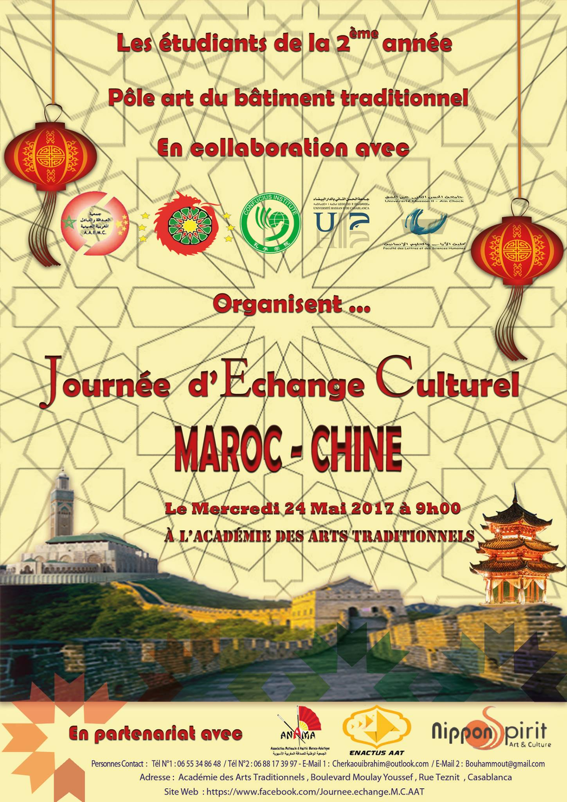

Au mois d’août 2018, la 25e édition du Salon international du Livre de Pékin a choisi le Maroc comme invité d’honneur. Premier pays africain à avoir ce privilège, il participe par plus de 500 titres rassemblant des publications du ministère de la Culture, en plus de celles des Archives du Maroc, du Conseil de la communauté marocaine à l’étranger, du Conseil national des Droits de l’Homme, de la Bibliothèque nationale du Royaume du Maroc, de l’Agence de l’Oriental, de l’Institut Royal de la culture amazighe et de l’Office national marocain du tourisme, sans compter un fonds constitué de 300 titres destinés à la vente appartenant aux maisons d’édition qui ont reçu le soutien du ministère de la Culture et de la Communication.
Par la même occasion, l’ancien ministre de l’Economie et des Finances, Fathallah Oualalou a remporté le prix spécial du livre de Chine pour son ouvrage « La Chine et nous …Répondre au second dépassement ». Le livre, publié par le centre culturel arabe à Casablanca, décrit et analyse l’exploit incroyable accompli par la Chine qui a réussi, en un tiers de siècle, à se hisser d’un pays en développement à une économie émergente, puis une puissance économique mondiale.
Alors que la Chine distribue massivement des bourses aux étudiants du continent, les instituts Confucius -avec les 48 établissements installés en Afrique- diffusent l’idéologie chinoise et proposent des cours de mandarin. Le Maroc étant le seul pays arabe qui compte trois de ces instituts, les Marocains, intéressés de plus en plus par l’apprentissage du mandarin, en profitent que ce soit à Casablanca, à Rabat ou à Tanger depuis 2009 en vue d’apprendre la langue chinoise et découvrir de près la culture de ce géant asiatique, ce qui a poussé les autorités des deux pays à étudier les possibilités de soutenir l’enseignement de la langue chinoise au niveau du Royaume.
A Rabat, un centre culturel chinois a été créé dans le cadre de l’Initiative chinoise « La Ceinture et la Route » et abrite plusieurs événements qui introduisent les Marocains à la culture chinoise et favorisent l’installation de ponts de connaissance entre les peuples des deux pays.
La cérémonie d’inauguration de la « Bibliothèque de Chine » à l’Université Hassan II de Casablanca, au Maroc, s’est tenue le 28 octobre à Casablanca. Sous le haut patronage du Bureau de l’Information du Conseil des Affaires d’Etat (SCIO) de Chine, l’événement a été organisé par la China National Publications Import & Export (Group) Corporation (CNPIEC) et l’Université Hassan II de Casablanca, avec le concours de l’ambassade de Chine au Maroc ainsi que de la bibliothèque et de l’Institut Confucius de l’Université Hassan II de Casablanca. Une centaine de personnes ont assisté à la cérémonie, dont Abdelhamid Jmahri, vice-président du Conseil de la région de Casablanca-Settat, Aawatif Hayar, présidente de l’Université Hassan II de Casablanca, Guo Weimin, vice-ministre du SCIO, Li Li, ambassadeur de Chine au Maroc, Chen Dongyun, conseillère culturelle de l’ambassade chinoise, les membres de la délégation du SCIO, des personnalités amicales issues de différents milieux du Maroc ainsi que des journalistes chinois et marocains.
Avant la cérémonie, des enseignants et des étudiants de l’Institut Confucius de l’Université Hassan II de Casablanca ont exécuté une interprétation de musique folklorique en jouant du erhu, du pipa et du hulusi et ont fait une démonstration de calligraphie chinoise, permettant aux invités de ressentir de près le charme unique de la culture et des instruments de musique traditionnels chinois.
Lors de la cérémonie d’inauguration, Guo Weimin a déclaré dans son discours que les échanges entre la Chine et le Maroc remontaient à loin dans l’histoire. « De l’ancienne Route de la Soie à la construction conjointe de “la Ceinture et la Route”, les échanges et l’inspiration mutuelle entre les civilisations des deux pays n’ont jamais cessé et se sont renouvelés au fil du temps, ce qui a jeté une base profonde et solide tant au niveau socioculturel que populaire pour le développement sain des relations bilatérales. L’Université Hassan II de Casablanca, une des plus grandes et plus anciennes universités publiques du Maroc, dispose d’une grande profondeur humaine et culturelle et d’un principe de gestion marqué par l’ouverture. Elle soutient depuis longtemps le développement de l’Institut Confucius et offre une ambiance propice à l’enseignement du chinois », a-t-il ajouté. Selon M. Guo, la « Bibliothèque de Chine », établie par le SCIO en collaboration avec l’université, est équipée de plus de 2 000 livres de qualité, de produits audiovisuels et de nombreuses ressources numériques pour présenter différents aspects de la Chine tels que l’économie, la politique, la culture, la société, l’écologie ainsi que les sciences et technologies. Elle servira de fenêtre essentielle pour les Marocains afin de connaître et de découvrir la Chine de façon globale, fournissant une plateforme de haut niveau pour les échanges académiques et culturels entre la Chine et le Maroc.
Dans son discours, Aawatif Hayar a indiqué que l’établissement de la « Bibliothèque de Chine » permettrait aux étudiants marocains de mieux connaître et de mieux comprendre la culture chinoise, affirmant qu’elle deviendrait un pont reliant son université et la culture chinoise. Mme Hayar a fait savoir que son université renforcerait davantage la coopération avec les universités chinoises et soutiendrait et continuerait de promouvoir l’enseignement du chinois. En parallèle, elle espérait trouver encore plus d’opportunités de coopération avec la Chine dans davantage de domaines dans le futur.

Abdelhamid Jmahri a déclaré dans son discours : « C’est un grand plaisir d’assister à la création et à l’ouverture de la “Bibliothèque de Chine”. Il y a un bon nombre de cas réussis de coopération entre Casablanca et la Chine, et cette réussite est étroitement liée aux efforts conjoints des deux parties. J’espère que dans le futur, les deux parties pourront continuer d’intensifier leurs échanges et leur coopération au niveau académique afin de bâtir ensemble un avenir meilleur ».
A la fin de la cérémonie, Ling Li, directeur adjoint de l’Office de promotion extérieure du SCIO, et Elmkaddem Kheddioui, vice-président de l’Université Hassan II de Casablanca, ont signé un accord portant sur la construction conjointe de la « Bibliothèque de Chine ».
En marge de la cérémonie d’inauguration, l’« Exposition de photos dédiée au 70e anniversaire de la fondation de la République populaire de Chine – un parcours splendide et un chapitre spectaculaire » a eu lieu à la bibliothèque de l’Université Hassan II de Casablanca. L’exposition montre le parcours splendide effectué par le pays depuis sa fondation il y a 70 ans ainsi que ses grandes réalisations et ses expériences précieuses. Elle permettra aux Marocains de découvrir de près le développement et le changement de la Chine au cours des sept dernières décennies et d’approfondir réellement leur compréhension et leur reconnaissance envers ce pays.
La « Bibliothèque de Chine » est un programme de marque lancé par le SCIO pour présenter la Chine au reste du monde et promouvoir les échanges culturels sino-étrangers. Celle à l’Université Hassan II de Casablanca est la 20e du genre établie à l’étranger.
Au titre de l’année académique 2016-2017, les étudiants de la deuxième année du pôle art bâtiment traditionnel en collaboration avec : l’Association d’Amitié Maroc – Chine, la faculté des lettres d’Ain Chock, l’Institut Confucius de Casablanca, l’Association ANAMA et ENACTUS A.A.T., ont organisé une journée d’échange culturel entre le Maroc et la Chine. Le programme de cet événement a contenu des conférences, ateliers et démonstrations culturelles.
 Voir plus.Inauguré le 5 décembre 2009, l'Institut Confucius, est né d'un partenariat entre l'Université Mohammed V-Agdal et l'université de Pékin pour les études internationales. Le Maroc rejoint donc les pays où sont répartis près de 3000 autres Instituts Confucius.
Lire plus.Confucius, né le 28 septembre 551 av. J.-C. à Zou et mort le 11 avril 479 av. J.-C. à Qufu dans l’actuelle province du Shandong, est un philosophe chinois. Son patronyme est Kong, son prénom Qiu, et son prénom social Zhongni.
Lire plus.
Créée en 1975, Enactus fait partie des organisations internationales qui œuvrent dans le domaine de l’entreprenariat social et le développement durable. Enactus développe des partenariats élargis entre le monde des affaires et celui de l’enseignement supérieur afin de préparer les étudiants à contribuer substantiellement au développement de leur pays en tant que futurs leaders entreprenants, éthiques et socialement responsables.
Enactus vise à créer un monde où les leaders des étudiants, les leaders du monde académique et les leaders du monde économique s’engagent dans l’action entrepreneuriale pour favoriser le progrès sociétal et façonner un monde meilleur et durable. Le réseau Enactus regroupe à travers le monde plus de 62 000 étudiants au sein de quelques 1 600 campus universitaires répartis sur 36 pays.
Lire plus.En vous inscrivant à cette newsletter, vous recevrez quotidiennement des informations et des actualités sur le Maroc et la Chine. vous ne regretterez jamais cette expérience.
envoyez-nous un message et abonnez-vous à notre newsletter!
© 2021 MarocChine project